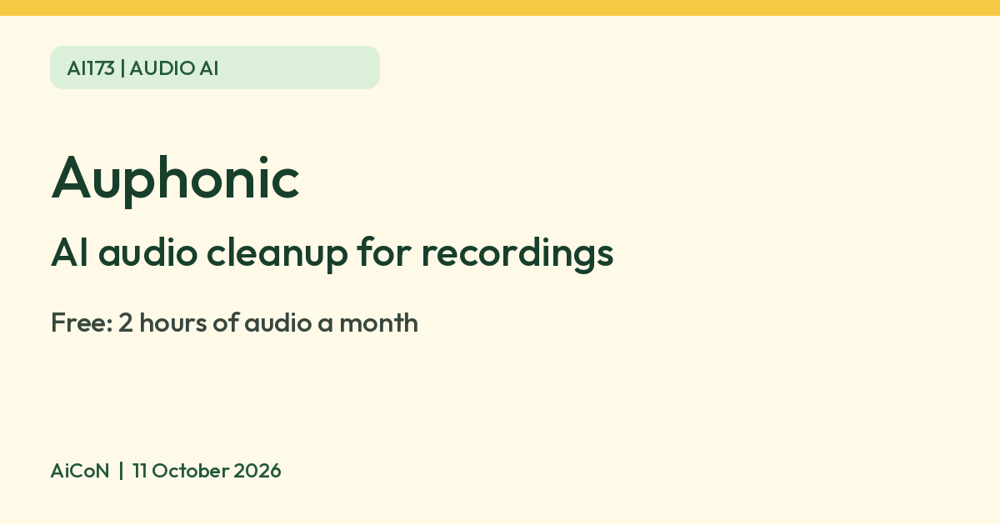

Auphonic: free AI audio cleanup, 2 hours a month
Auphonic says you can clean and level recordings free for up to 2 hours of audio a month, with no card. Free productions come with a jingle.

What it is
Auphonic is a web service that cleans up and balances audio after you record it. Its homepage lists an Intelligent Leveler that balances levels between speakers, music and speech, noise and reverb reduction, filters for harsh sounds, and automatic cutting of silence, coughs and filler words such as "ah" and "uhm". Auphonic's pricing page describes these as AI-based audio algorithms. It is aimed at podcasts, video audio and lecture recordings.
Is it free
Yes, with a monthly cap. Auphonic says it is free for up to 2 hours of processed audio each month. Signing up needs only an email address and no card. Free credits do not carry over. Free productions come with an Auphonic jingle, as Auphonic's pricing page and FAQ both say. On the Free plan the leveler, noise reduction, filtering and filler cutting are included. Multitrack productions are limited to under 20 minutes, and multilingual speech recognition and automatic shownotes are paid features. Paid credits are sold in hours per month or as one-time packs. We did not verify an Indian rupee checkout total, so no paid price is quoted. Recurring credits reset monthly without rollover; purchased one-time credits do not expire. A one-time purchase can optionally enable automatic top-ups when the balance falls below a chosen threshold. Review tax, renewal and auto-top-up settings before paying. The terms say paid fees are not refundable, recurring subscriptions renew automatically unless cancelled before the period ends, and cancellation is in Account settings. No purchase was tested.
Is it available in India
We could not confirm this. Auphonic's pages do not list countries, and say that sales tax or VAT may be charged depending on where you live.
Privacy before uploading
Auphonic's privacy policy says content may be viewed or listened to by an employee or contractor working on its audio algorithms. It may keep selected audio/video files or excerpts in internal storage for improvement. The normal production deletion schedule is therefore not a blanket promise that every copy of your recording disappears.
If you use Auphonic for business purposes, the policy offers a training/fine-tuning opt-out flag by request to contact@auphonic.com. For team accounts, the owner's flag covers team members. Do not assume this is automatically enabled or a universal consumer opt-out. Ask for confirmation before uploading confidential business audio.
Data is processed mainly on servers in Germany, with Cloudflare R2 used for media storage. For non-EU users, files may be stored in the EU or near their location. An EU-only or Germany/Hetzner-only storage preference can be requested, except transfers you direct to external services. The policy says content/metadata are not shared with third parties without permission; connecting an external publishing or file-transfer service is a separate choice.
Use only recordings you have the right to process, with permission from speakers where needed. Avoid confidential meetings, private health or financial details, and recordings of other people who have not agreed. Requests to delete or correct personal data can go to support@auphonic.com; account deletion may take time and legal retention exceptions apply.
How to try it
- Sign up at auphonic.com with your email.
- Upload a recording and choose the options you want, such as the leveler and noise reduction.
- Keep the original file, check the production duration and options, then start processing. Download the result promptly and listen through it before sharing: noise removal or filler cutting can change speech. Leave external publishing services disconnected unless you intend to publish there.
Limits to know
- Auphonic's terms say it is not a backup service. Audio files are deleted after 21 days, or 7 days for video and API productions.
- Its privacy policy says it might keep selected audio files, or parts of them, to improve its algorithms. Avoid uploading private recordings. That advice is from AiCoN.
- Billing uses processed duration with a minimum of 3 minutes per production. Intros add time; multitrack billing follows the output duration rather than adding every track. Failed productions do not use credits. Re-running the same production with the same input files and different settings is free; changing an input or starting a new production charges again. The pricing FAQ offers a Refund credits link if you are unhappy with the result. This is a processing-credit refund, not a cash refund: the terms say paid fees are not refundable.
- We did not sign in, upload a recording, spend credits or test audio quality. The privacy policy says the service is not intended for children under 16.
Frequently asked questions
Is Auphonic free?
Auphonic says you can use it free for up to 2 hours of audio each month, with no card needed. Free productions come with a jingle.
Can I rerun it without using more hours?
The pricing FAQ says yes if you edit the same production and keep the same input files. A new production or changed input file uses credits again.
Will all recordings be deleted after 21 days?
Normal audio productions are deleted after 21 days, and video/API productions after 7 days. Selected audio/video excerpts may be kept internally for algorithm improvement, and billing metadata remains. Do not use the service as your only backup.
Sources: Auphonic pricing, Auphonic homepage, Auphonic privacy policy, Auphonic terms of service. Checked 11 October 2026.